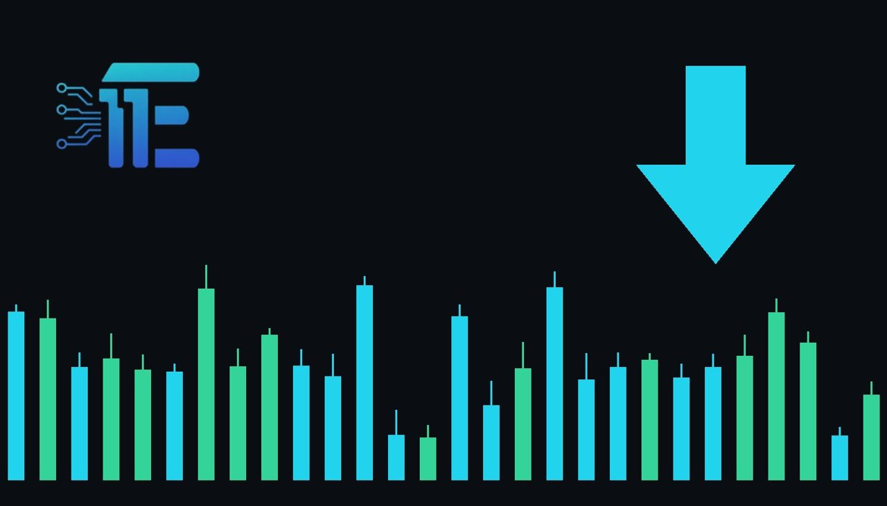

Gold Slides Below $3,800 on Fed Hike Bets and Strong Dollarតម្លៃមាសធ្លាក់ចុះក្រោម 3800 ដុល្លារ ដោយសារការរំពឹងទុកលើការដំឡើងអត្រាការប្រាក់ពី Fed និងប្រាក់ដុល្លារអាមេរិកខ្លាំង
XAU/USD impact: ▼ Bearishផលប៉ះពាល់លើ XAU/USD: ▼ ធ្លាក់

Gold prices tumbled below the $3,800 level alongside steep drops in mining stocks amid growing expectations of Federal Reserve rate hikes. This sharp downturn highlights how surging borrowing costs and a strong dollar continue to pressure precious metals.
តម្លៃមាសបានធ្លាក់ចុះក្រោម 3800 ដុល្លារ ព្រមជាមួយនឹងការធ្លាក់ចុះនៃភាគហ៊ុនរុករករ៉ែ ដោយសារការរំពឹងទុកកើនឡើងលើការដំឡើងអត្រាការប្រាក់ពីធនាគារកណ្តាល Fed។ ការធ្លាក់ចុះនេះបង្ហាញថា ការចំណាយលើការប្រាក់ខ្ពស់និងប្រាក់ដុល្លារអាមេរិកខ្លាំងបន្តដាក់សម្ពាធលើទីផ្សារមាស។
Gold prices recently experienced a steep decline, falling below the $3,800 threshold to touch multi-month lows. The sharp move lower coincided with broader drops across precious and industrial metals, heavily impacting mining equities such as Newmont and Freeport-McMoRan. Market participants pointed to aggressive positioning adjustments, fast money exiting the asset class, and mounting cross-asset selling pressure as key drivers behind the accelerated downward momentum.
តម្លៃមាសបានជួបប្រទះនឹងការធ្លាក់ចុះយ៉ាងខ្លាំងថ្មីៗនេះ ដោយបានធ្លាក់ចុះក្រោមដែនកំណត់ 3800 ដុល្លារ ការធ្លាក់ចុះនេះកើតឡើងស្របពេលជាមួយនឹងការធ្លាក់ចុះទូទាំងទីផ្សារលោហៈមានតម្លៃ និងលោហៈឧស្សាហកម្ម ដែលប៉ះពាល់យ៉ាងខ្លាំងដល់ភាគហ៊ុនក្រុមហ៊ុនរុករករ៉ែដូចជា Newmont និង Freeport-McMoRan។ អ្នកចូលរួមក្នុងទីផ្សារបានចង្អុលបង្ហាញថា ការកែសម្រួលទីតាំងជួញដូរ ការដកទុនរហ័សចេញពីទ្រព្យសកម្ម និងសម្ពាធនៃការលក់ឆ្លងកាត់ទីផ្សារ គឺជាកត្តាជំរុញដ៏សំខាន់នៅពីក្រោយល្បឿនធ្លាក់ចុះនេះ។
The primary transmission channel for this pressure stems from shifting monetary policy expectations and the relative strength of the US dollar. As the Federal Reserve contemplates a more aggressive stance to combat persistent inflation—with discussions around potential rate hikes gaining traction—Treasury yields and the US dollar have found renewed support. Higher yields increase the opportunity cost of holding non-yielding bullion, while a stronger dollar makes dollar-denominated commodities more expensive for international buyers.
និងកម្លាំងនៃប្រាក់ដុល្លារអាមេរិក។ ខណៈពេលដែលធនាគារកណ្តាល Fed ពិចារណាលើគោលនយោបាយតឹងរ៉ឹងជាងមុនដើម្បីទប់ទល់នឹងអតិផរណាដែលនៅតែបន្តកើតមាន—ជាមួយនឹងការពិភាក្សាអំពីលទ្ធភាពនៃការដំឡើងអត្រាការប្រាក់— ទិន្នផលរតនាគារ និងប្រាក់ដុល្លារអាមេរិកទទួលបានការគាំទ្រជាថ្មី។ អត្រាការប្រាក់ និងទិន្នផលខ្ពស់ធ្វើឱ្យការកាន់កាប់មាសដែលគ្មានការប្រាក់មានការខាតបង់ឱកាសខ្ពស់ ខណៈដែលប្រាក់ដុល្លារអាមេរិកខ្លាំងធ្វើឱ្យទំនិញតម្លៃមាសមានតម្លៃថ្លៃជាងមុនសម្រាប់អ្នកទិញអន្តរជាតិ។
Looking at the market dynamics from a balanced perspective, several factors dictate the near-term path for XAU/USD. Continued signals from central bank officials regarding tighter monetary policy, persistent inflation above targets, and rising borrowing costs typically pressure gold by boosting real yields and currency strength. Conversely, any unexpected economic softening, renewed safe-haven demand stemming from geopolitical tensions, or a sudden reversal in speculative positioning could offer underlying support and help the metal recover lost ground.
ប្រសិនបើមើលលើសណ្ឋានទីផ្សារតាមទស្សនៈមានតុល្យភាព កត្តាចំនួនជាច្រើនកំណត់ទិសដៅរយៈពេលខ្លីសម្រាប់គូប្រៀបធៀប XAU/USD។ សញ្ញាបន្តបន្ទាប់ពីមន្ត្រីធនាគារកណ្តាលទាក់ទងនឹងគោលនយោបាយតឹងរ៉ឹង អតិផរណាខ្ពស់ជាងគោលដៅ និងការកើនឡើងនៃថ្លៃដើមខ្ចីប្រាក់ តែងតែដាក់សម្ពាធលើមាសតាមរយៈការបង្កើនទិន្នផលពិតប្រាកដនិងកម្លាំងរូបិយវត្ថុ។ ផ្ទុយទៅវិញ ការធ្លាក់ចុះសេដ្ឋកិច្ចដែលមិនបានរំពឹងទុក ឬការផ្លាស់ប្តូរទិសដៅភ្លាមៗក្នុងការជួញដូរ អាចផ្តល់ការគាំទ្រមូលដ្ឋាន និងជួយឱ្យមាសងើបឡើងវិញ។
Traders monitoring the market should closely watch upcoming US economic data releases, particularly figures related to inflation, employment, and retail sales, alongside public commentary from Federal Reserve officials. Any shifts in rate-hike probabilities or sudden movements in the US dollar index and Treasury yields will likely dictate whether gold extends its current losses or attempts a meaningful technical rebound.
អ្នកជួញដូរដែលតាមដានទីផ្សារគួរតែពិនិត្យមើលទិន្នន័យសេដ្ឋកិច្ចអាមេរិកដែលនឹងចេញផ្សាយនាពេលខាងមុខ ជាពិសេសតួលេខទាក់ទងនឹងអតិផរណា ការងារ និងការលក់រាយ ព្រមទាំងការអត្ថាធិប្បាយជាសាធារណៈពីមន្ត្រីធនាគារកណ្តាល Fed។ រាល់ការប្រែប្រួលនៃឱកាសដំឡើងអត្រាការប្រាក់ ឬចលនាភ្លាមៗនៃសន្ទស្សន៍ប្រាក់ដុល្លារអាមេរិក និងទិន្នផលរតនាគារ នឹងកំណត់ថាតើមាសបន្តការខាតបខាតបន្តទៀត ឬព្យាយាមងើបឡើងវិញតាមបច្ចេកទេស។
Key takeawaysចំណុចសំខាន់ៗ
- Gold prices slid below $3,800 amid growing expectations of Federal Reserve rate hikes.
- តម្លៃមាសបានធ្លាក់ចុះក្រោម 3800 ដុល្លារចំពេលការរំពឹងទុកកើនឡើងលើការដំឡើងអត្រាការប្រាក់ពី Fed។
- Rising yields and a stronger US dollar increase the opportunity cost of holding bullion.
- ទិន្នផលខ្ពស់និងប្រាក់ដុល្លារអាមេរិកខ្លាំងបង្កើនការខាតបង់ឱកាសនៃការកាន់កាប់មាស។
- Traders are watching upcoming US economic releases and central bank commentary for further direction.
- អ្នកជួញដូរកំពុងតាមដានទិន្នន័យសេដ្ឋកិច្ចអាមេរិក និងការអត្ថាធិប្បាយរបស់ធនាគារកណ្តាលសម្រាប់ទិសដៅបន្ទាប់។
Original commentary by THE MARKET CODE, based on public reporting from Yahoo! Finance: GC=F News. Written with the help of AI. Educational only, not financial advice.
មតិវិភាគដើមដោយ THE MARKET CODE ផ្អែកលើការរាយការណ៍សាធារណៈពី Yahoo! Finance: GC=F News។ សរសេរដោយមានជំនួយពី AI។ មាតិកាអប់រំប៉ុណ្ណោះ មិនមែនជាដំបូន្មានហិរញ្ញវត្ថុទេ។